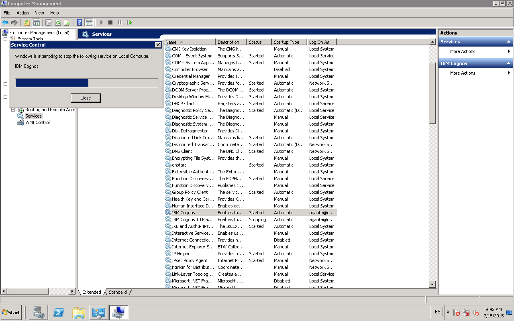
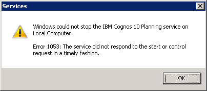
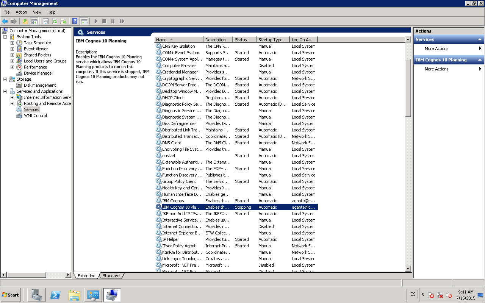
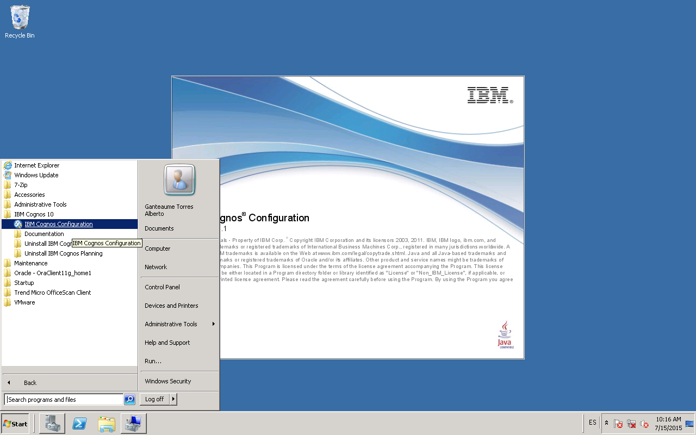
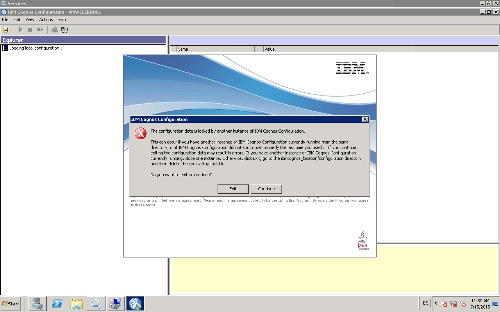
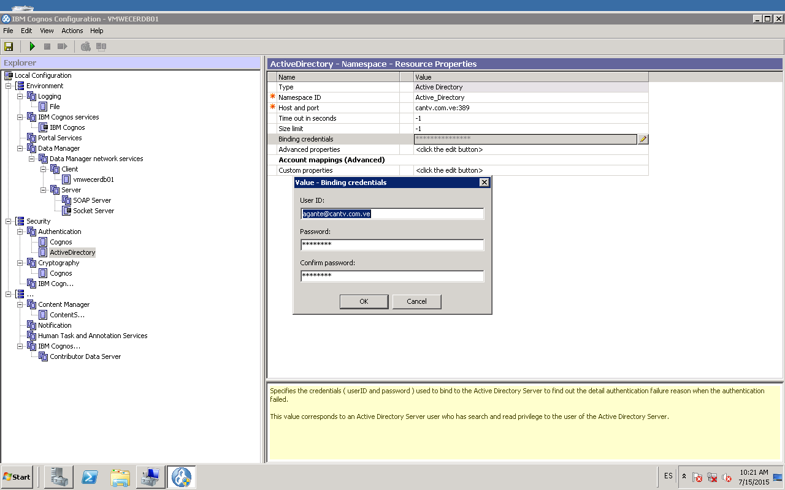
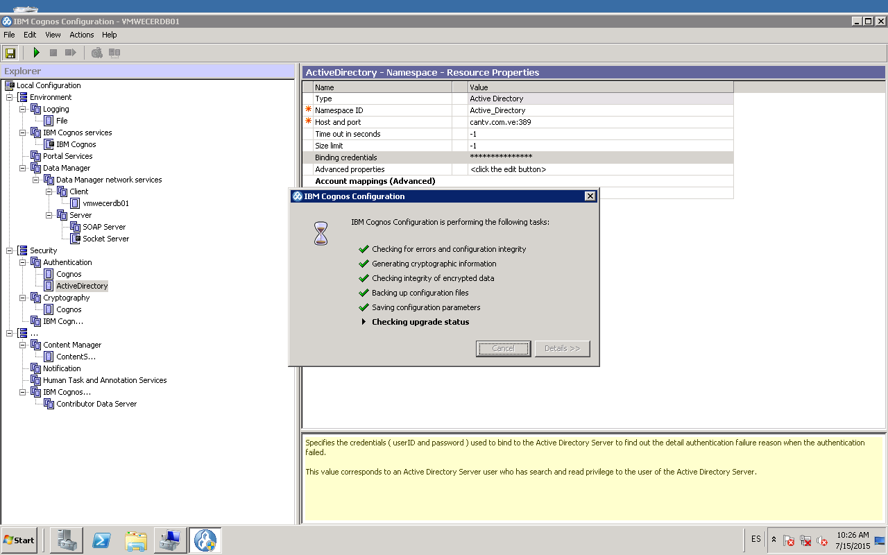
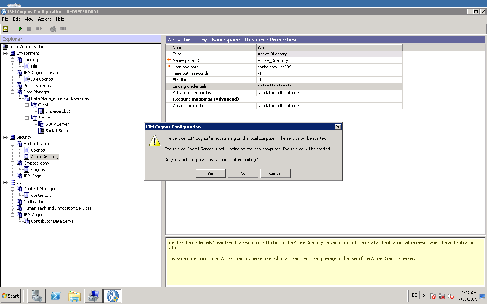
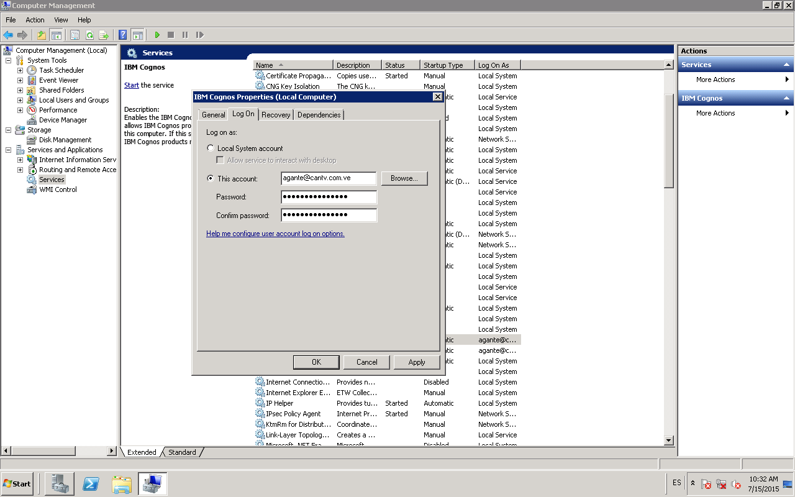

Re-Iniciar servicios IBM Cognos V10
📌 1 📌 Parar Servicios IBM Cognos v10 en servidores
VMWECERDB04 IP 161.196.140.89
VMWECERDB03 IP 161.196.140.88
VMWECERDB02 IP 161.196.140.87
VMWECERDB01 IP 161.196.140.86

Es posible que un servicio falle al momento de parar el servicio.


En este caso se debe re-iniciar el servidor, pero primero es mejor parar los servicios de los demás servidores
faltantes. Si se hace así, se re-inicia el servidor al momento que corresponde subir los servicios del servidor.
📌 2 📌 Subir los servicios de IBM Cognos v10. en el siguiente orden de servidores:
VMWECERDB01, VMWECERDB02, VMWECERDB03
En el servidor VMWECERDB01: primero el servicio IBM Cognos y luego el servicio IBM Cognos Data Manager
Socket Server
En el servidor VMWECERDB02: primero el servicio IBM Cognos y luego el servicio IBM Cognos 10 Planning.
En el servidor VMWECERDB03: primero el servicio IBM Cognos y luego el servicio IBM Cognos 10 Planning.
📌 3 📌 En caso que sea necesario cambiar la clave del usuario con la cual se levantan los servicios se siguen
los pasos necesarios.
📌 3.a 📌 abrir el programa IBM Cognos Configuration en servidor VMWECERDB01:

📌 3.b 📌 Es posible que ocurra el siguiente error:

se debe salir (“exit”). Borrar archivo cogstartup.lock que esta ubicado en E:\Program Files
(x86)\ibm\cognos\c10\configuration. Y volver a abrir programa.
📌 3.c 📌 en la sección “Security” del arbol de opciones que se despliega a la derecha seleccionar “authentication ->Binding Credentials” . Colocar clave activa del usuario.

📌 3.d 📌 Salvar configuración. (imagen disco arriba a la derecha)

📌 3.e 📌 Salir de programa. Debe aparecer el siguiente mensaje:

seleccionar la opción “NO”.
📌 3.f 📌 Abrir programa de panel de control “Servicios”:
📌 3.g 📌 Seleccionar servicios IBM Cognos y abrir sus propiedades (boton derecho). Seleccionar pestaña “LogOn”

Colocar clave activa del usuario utilizado para iniciar servicios. El servicio “IBM Cognos” demora en iniciarse.
Es mejor cerrar ventana del inicio del servicio y esperar que el servicio pase del estado “starting” a ””started”.
Luego repetir el paso para el servicio“IBM Cognos Data Manager”
📌 3.h 📌 Abrir en servidor VMWECERDB02 programa de los servicios y actualizar la clave del usuario que levanta los servicios de IBM Cognos. (paso anterior pero en los demás servidores). Luego levantar servicios: primero IBM Cognos y segundo IBM Cognos Planning. Si los servicios de IBM Cognos no se pararan se debe re-iniciar el servidor. Luego hacer el mismo procedimiento en servidor VMWECERDB02.
📌 3.i 📌 Solicitar a usuario de Técnico-funcional que valide funcionamiento.